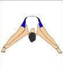

Загряване
При всяко тичане трябва да започнете с добра загрявка и правилно разпускане. Защо това е толкова важно? Хубавата загрявка разширява кръвоносните съдове, като по този начин мускулите ви се зареждат с кислород по-добре. Освен това така се повишава мускулната температура, което води със себе си по-голяма гъвкавост и използваемост. След като бавно повишите сърдечния си ритъм, загрявката помага да се намали стресът върху сърцето, когато започнете да тичате.


Разпускане
Също толкова важно е и разпускането, като то поддържа кръвта да минава през цялото тяло. Ако внезапно спрете без разпускане, това може да ви причини световъртеж, защото сърдечния ви ритъм и кръвно налягане спадат рязко. Постепенното намаляване е по-добрия вариант, а това става с разпускането.
Екипировка за бягане
Маратонки за бягане - Изборът на подходящи маратонки за бягане е изключително важен. С помощта на консултантите в специализираните спортни магазини, които в повечето случаи разполагат със скенер за дигитален анализ на стъпалото ще можете да закупите подходящите за вас обувки.
Чорапи за бягане - Обикновените чорапи ще абсорбират потта и ще се движат в обувката, което ще улесни образуването на мехури и увеличи дискомфорта. Спортните чорапи ще прилепнат към краката ви и ще отвеждат потта от тях, а това ще доведе до намаляване на честотата на поява на мехури.
Къси панталони и тениски - Избягвайте памучни дрехи. Купете си дрехи изработени от синтетични материали , които изтеглят потта и влагата далеч от кожата ви. Те са леки и предотвратяват дразнещо и болезнено прищипване на несинтетичните тъкани.
През студените дни - Препоръчително е, особено в по-студените дни, да слагате шапка и ръкавици. Препоръчително е да използвате няколко тънки слоя дрехи вместо по-малко, но значително по-дебели, тъй като това може да предизвика нежелано потене дори в най-студените дни от годината.